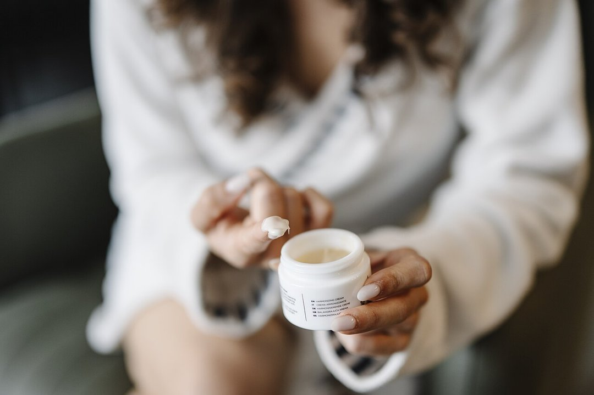

📷 사진 1 자리

▲ 보습크림을 덜어 바르는 모습 · 사진: Shixart1985 / CC BY 2.0 / 위키미디어 공용
한국소비자원이 많이 팔리는 보습크림 8종을 시험한 결과를 내놨어요. 같은 양으로 따지면 가장 비싼 제품이 가장 싼 제품의 6.9배였어요. 가격 차이만큼 결과도 갈렸을까요?
비싸면 더 촉촉할까
소비자원은 1mL(또는 1g)당 가격을 맞춰 비교했어요. 세타필 모이스춰라이징 크림이 66원으로 가장 쌌고, 라로슈포제 시카플라스트 멀티 리페어 크림 B5가 456원으로 가장 비쌌어요.
소비자 50명이 직접 발라 본 만족도는 반대로 나왔어요. 세타필이 5점 만점에 4.0점으로 1위, 라로슈포제가 3.4점으로 8종 중 가장 낮았어요. 8종 평균은 3.7점이었고요.
기기로 잰 결과는 또 달라요. 피부 표면에 수분을 채우는 보습력은 라로슈포제, 에스트라, 이니스프리가 상대적으로 우수했어요. 비싼 쪽 세 제품이 이 항목에서는 값을 한 셈이에요.
가성비로 꼽힌 제품
보습크림은 수분을 채우는 힘과 수분이 날아가지 않게 막는 힘이 둘 다 필요해요. 세타필은 막는 힘(수분 증발 감소)에서 우수 평가를 받아 소비자원이 가성비 제품으로 꼽았어요.
| 제품 | 1mL당 가격 | 눈에 띈 결과 |
|---|---|---|
| 세타필 | 66원 | 만족도 1위, 증발 막기 우수 |
| 라로슈포제 | 456원 | 보습력 우수, 만족도 최하위 |
| 에스트라·이니스프리 | 351·405원(SBS) | 보습력·증발 막기 둘 다 우수 |
SBS 보도에 따르면 일리윤 세라마이드 아토 집중 크림도 1mL당 67원으로 세타필과 함께 가성비 제품에 들었어요. 바이오더마와 피지오겔은 만족도 공동 2위였고요.
내 피부엔 어떤 걸
소비자원 조언은 피부 타입부터 보라는 거예요. 세수 뒤 많이 당기는 건성이라면 수분 증발을 막아 주는 유분감 있는 제품이 맞아요. 번들거리는 지성은 가벼운 젤이나 로션 쪽이 낫고요.
많이 바른다고 좋지도 않아요. 다 흡수되지 않은 크림은 모공을 막아 트러블이 생길 수 있어요. SBS 보도에 따르면 8종 모두 중금속·보존제 안전성 검사는 통과했어요.
시험에는 조건이 붙어요. 보습력은 얼굴이 아닌 팔 안쪽에 발라 쟀고, 가격은 올해 3월 판매가 기준이에요. 같은 브랜드라도 시험한 그 제품에만 해당하는 결과예요.
이번 결과에서 볼 건 '싼 게 이겼다'보다 만족도와 보습력이 서로 다른 질문이라는 점이에요. 바르는 느낌이 좋은 크림과 오래 촉촉한 크림이 꼭 같지 않으니 건조함이 심하다면 증발 막기 등급을, 끈적임이 싫다면 만족도를 먼저 보면 돼요.
소비자원 비교 결과 전체 표는 소비자24 누리집에서 볼 수 있어요. 지금 쓰는 크림이 목록에 있다면 등급부터 찾아보세요.
함께 보면 좋은 이슈